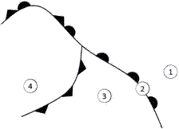

1 - Les deux principaux composants de l'air sec sont : Explication
A- l'azote et l'oxygène
B- l'oxygène et le gaz carbonique
C- l'azote et l'hélium
D- l'oxygène et l'hydrogène
2 - Dans l'atmosphère standard, la température et la pression de 0 à 11 km d'altitude évoluent de la manière suivante : Explication
A- la température diminue, la pression augmente
B- la température diminue et la pression reste constante
C- la température et la pression sont constantes
D- la température et la pression diminuent
3 - Dans l'atmosphère standard, la température au niveau de la mer est de : Explication
A- 0 °C
B- 10 °C
C- 15 °C
D- 20 °C
4 - L'instrument utilisé pour mesurer la vitesse du vent en surface est : Explication
A- une girouette placée sur un pylône
B- un anémomètre placé sur un pylône
C- un ballon sonde
D- un baromètre placé sur un pylône
5 - Sur une carte de pression une ligne qui joint les points d'égale pression est nommée : Explication
A- une isotherme
B- une isocline
C- une isohypse
D- une isobare
6 - « marais barométrique » désigne : Explication
A- une zone où la pression varie peu
B- une zone ou un axe de basses pressions
C- une zone ou un axe de hautes pressions
D- une zone où le gradient de pression est très élevé
7 - Sur le schéma d'une perturbation présenté ci-dessous, le numéro qui correspond au secteur chaud est :  Explication
A- 1
B- 2
C- 3
D- 4
8 - Au niveau d'un front chaud : Explication
A- l'air chaud repousse l'air froid devant lui et passe au-dessus
B- l'air froid repousse l'air chaud devant lui et passe au-dessus
C- l'air froid repousse l'air chaud devant lui et passe au-dessous
D- l'air chaud repousse l'air froid devant lui et passe au-dessous
9 - Si un observateur se place face au vent dans l'hémisphère nord, la dépression et l'anticyclone se situent de la manière suivante : Explication
A- anticyclone sur sa droite, dépression sur sa gauche
B- anticyclone devant lui, dépression derrière lui
C- anticyclone sur sa gauche, dépression sur sa droite
D- anticyclone derrière lui, dépression devant lui
10 - Le phénomène rentrant le plus souvent en jeu dans la formation des nuages est : Explication
A- le refroidissement d'une masse d'air humide
B- l'augmentation de la pression atmosphérique
C- le réchauffement d'une masse d'air saturée
D- l'assèchement d'une masse d'air humide
11 - Le préfixe des nuages dont la base est la plus élevée est : Explication
A- alto
B- strato
C- cirro
D- cumulo
12 - Le nuage figurant sur la photo ci-dessous est un : Explication ⚠️
A- cumulonimbus
B- cumulus
C- stratus
D- altocumulus
13 - Le phénomène météorologique observé sur la photo ci-dessous est : Explication
A- du brouillard
B- un orage
C- un front chaud
D- la convection
14 - La grêle est un type de précipitation qui se forme dans : Explication
A- les stratus
B- les nimbostratus
C- les cumulonimbus
D- les stratocumulus
15 - Les courants de vent puissants que l'on rencontre à très haute altitude sont nommés : Explication
A- jet-stream
B- jet-lag
C- tornade
D- rafale
16 - La brise de pente (montante) se forme en région : Explication
A- côtière et de jour
B- côtière et de nuit
C- montagneuse et de nuit
D- montagneuse et de jour
17 - Sur la carte ci-dessous, la circulation du vent dénommé Mistral correspond à la flèche : Explication
18 - En plaine, dans les basses couches de l'atmosphère, les turbulences sont générées par : Explication
A- l'onde
B- les trous d'air
C- la convection
D- le brouillard
19 - Le principal danger induit par le brouillard sur le vol est : Explication
A- la formation de givrage possible en toutes saisons
B- la turbulence associée
C- la diminution de la visibilité
D- le risque de foudroiement
20 - Parmi les éléments suivants, une conséquence possible du givrage est : Explication
A- gain d'altitude
B- altération des profils aérodynamiques
C- amélioration des performances de l'aéronef
D- diminution de la traînée